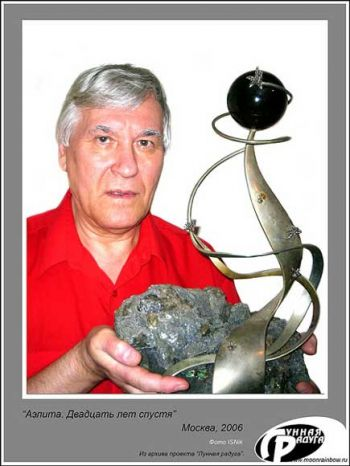

|

Сергей Иванович Павлов (род. 30 июня 1935, Бердянск) — советский писатель-фантаст, классик современной научной фантастики. Член Союза писателей СССР (1970), член совета омского КЛФ «Алькор» (1990), лауреат премии «Аэлита» (1985), лауреат премии имени Ивана Ефремова в номинации «За выдающийся вклад в развитие отечественной фантастики» (2004), основатель литературной премии «Лунная радуга».
Библиография:
Романы:
Цикл «Лунная радуга»:
• Лунная радуга: кн.1. «По черному следу» (1978)
• Лунная радуга: кн.2. «Мягкие зеркала» (1983)
• «Волшебный локон Ампары» (кн. 1, 1991, в соавторстве с Н. Шаровой; кн. 2, 1997)
Повести:
• «Аргус против Марса» (в соавторстве с Н. Шагуриным, 1965)
• «Корона Солнца» (1967)
• «Акванавты (Океанавты)» (1968)
• «Чердак Вселенной» (1971)
• «Неуловимый прайд» (1974)
Рассказы:
• «Банка фруктового сока» (1963)
• «Кентавр выпускает стрелу» (в соавторстве с Н. Шагуриным, 1965)
• «Ангелы моря» (1967)
• «Миры на ладони» (1971)
• «Мера присутствия» (1972)
• «Амазония, ярданг Восточный» (1987)
Фантастические идеи и термины:
Сергею Ивановичу Павлову принадлежит признанное авторство целого ряда фантастических идей (см. Регистр научно-фантастических идей Альтшуллера) и терминов (см. Глоссарий ВнеЗемелья и Глоссарий Мокрого космоса).
Реестр идей:
• Идея гидрокомбовой оболочки и идея консервации личности в биоаналогах, переноса её в организм животного;
• Идея использования стелларатора как источника энергии для двигателя космического корабля.
Реестр терминов:
• Фантасту Сергею Павлову принадлежит авторство в образовании термина «внеземелье» и производных от него. Слово «внеземелье» с лёгкой руки фантаста, впервые употребившего его на страницах своего романа «Лунная радуга» (1978), прижилось. Термин «внеземелье» ныне широко употребим и часто встречается не только на страницах произведений многих фантастов, но и стал именем нарицательным для обозначения миров за пределами Земли.
• Автор, использовав в своих фантастических произведениях, ввёл в обиход следующие термины (большинство из которых придумал): акванавт, безектор, безекция, видеотектор, гидрокомбовая оболочка, иглолёт, инкрет Буридана, космический катер, квантабер, космен, люстровик, медиколог, меркуролог, нортвен, акванавт|океанавт, омнижектор, пиролакс, пневмолыжи, сатурнолог, сектейнер, селенген, стелларатор, ступоходы, телефотер, теслит, трегер, уззун, эленарты, эйратер, экзоператор, гекоринги, ледорит и другие.
• Кроме того, в своих произведениях автор одним из первых применил военно-морскую терминологию для описания типов (балкер, драккар, крейсер, лихтер, люггер, рейдер, танкер, тендер, туер) и устройства (гондек, комингс, люнет, отсек, рендель, рубка, спардек, твиндек, трюм, ярус) космических кораблей.
|